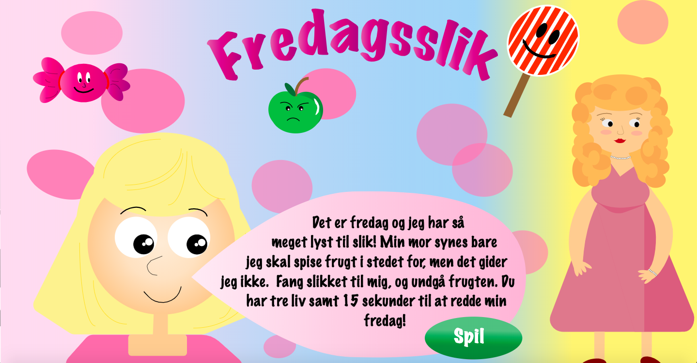

Animationstemat tager udgangspunkt i at lære at programmere sit eget computerspil. Dette er en lang proces, og indholder mange elementer såsom idéudvikling, aktivitets- og statemachinediagrammer, baggrundsdesign, karakterdesign og design af UI elementer. Vi har altså arbejdet intenst med fysiske skitser, med design i Adobe Illustrator og programmering af spillet i HTML, CSS og til sidst Javascript. Javascript og Illustrator var nye værktøjer vi lærte i dette tema, som viste sig at være meget brugbare og nyttige. Herudover lærte vi ny teori omhandlende billedformater, formgivnings- og kompositionsprincipper,brugen af Git, og SCRUM Framework (f.eks trelloboard). Temaet var meget lærerigt, og udviklede mine kompetencer inden for kodning og design i høj grad.
Denne opgave handler som tidligere nævnt at om programmere sit eget animationsspil. Jeg har selv designet og tegnet både baggrund, karakterer og UI elemnterne selv i Adobe Illustrator, og derudover har jeg programmeret det i HTML, CSS og Javascript. Mit spil hedder "Fredagsslik "og går ud på at fange så meget slik som muligt, inden tiden løber ud. Hvis man fanger frugt i stedet mister man liv. Prøv det via linket! og se min idé og skitser til spillet.
Gruppeopgaven i animationstemaet, går ud på at designe og programmere et animationsspil til Sex og Samfunds side om Privatsnak. Emnet er billeddeling og reglerne herom, så derfor lavede vi i gruppen et spil med forskellige scenarier, hvor brugeren skal svare på om man må dele billedet i situationen eller ej. Prøv det via linket! og se vores dokumentationssite